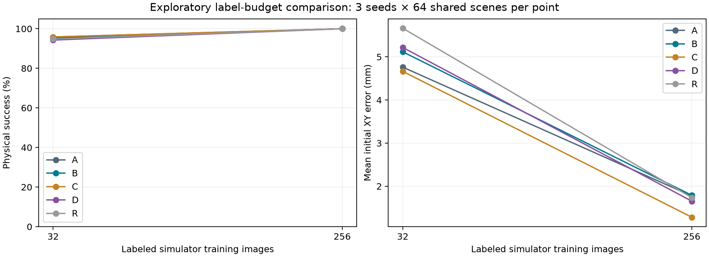
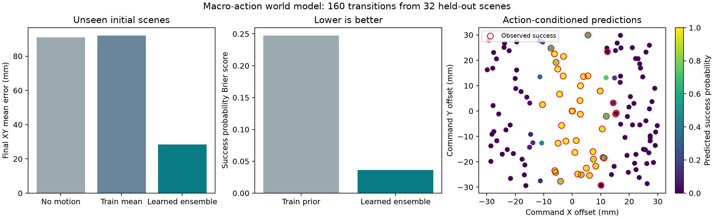
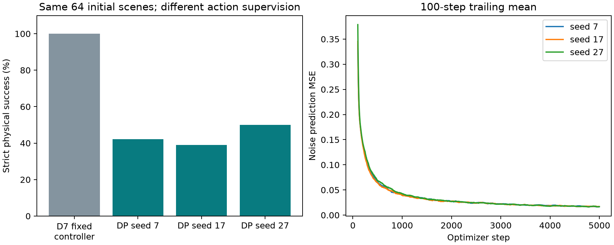

A · 种子 7 · 场景 30014
初始定位误差 14.11 mm；未完成合格抬升。
从 12 条个人手机视频，走到四组受控训练、物理抓取与动作结果预测。
任务：抓起 20×20×10 mm 黑方块，放在黑线右侧，释放并撤离。模型从完整 RGB 估计位置；Panda 双指通过接触动力学抓取，没有物体附着或传送。
256 张仿真适配图像时，所有组均为 192/192。缩减到 32 张后，联合组 D 为 181/192，RGB 基础组 A 为 184/192，差值 -1.56 个百分点。这个小规模探索实验不支持“加入两类标签便能提高成功率”，也不足以证明方法普遍无效或显著变差。
物体框与手关键点仅用于辅助训练；部署前丢弃两个辅助头。三种训练种子 7/17/27，每个模型测试相同的 64 个场景。每组 192 次执行不是 192 个独立环境。
| 组 | 真实视频预训练 | 256 图：成功 | XY / mm | 32 图：成功 | XY / mm |
|---|---|---|---|---|---|
| A | RGB 基础训练 | 192/192 | 1.774 | 184/192 | 4.761 |
| B | RGB + 物体框 | 192/192 | 1.790 | 183/192 | 5.117 |
| C | RGB + 手关键点 | 192/192 | 1.282 | 184/192 | 4.662 |
| D | RGB + 两种辅助目标 | 192/192 | 1.654 | 181/192 | 5.217 |
| R | ImageNet，无个人视频预训练 | 192/192 | 1.735 | 182/192 | 5.663 |

手部单独监督 C 的平均定位误差较低，但不是每个种子都更好，且没有增加任务成功次数。R 参照和 32 图条件是在看到部分开发结果后追加；32 图使用同一固定子集与已有测试场景，属于探索性诊断。
种子 7、场景 30000，A/B/C/D 全部展示。视频为斜视演示；模型接收俯视图。此例成功不能替代完整统计。
低数据实验的 46 次失败分布在 6 个场景，均未完成合格抬升；场景 30038、30056 在全部 15 个组别／种子组合中失败。以下按种子、场景升序固定选取每组首次失败，回放不计入新增样本。
独立扩展的宏动作世界模型输入当前物体 XY 与绝对抓取命令，输出最终 XY、抬升和任务成功概率。它学习一次完整固定技能的结果；没有生成视频、语言策略或用于规划选动作。
560 条转换全部来自仿真：训练 64×5、验证 16×5、测试 32×5。每场景一个零偏移、四个事先采样的偏移动作。三个固定训练种子等权集成，使用最终步检查点。
| 预测器与输入 | 终点均误差 / mm | P90 / mm | 成功标签准确率 | Brier |
|---|---|---|---|---|
| 静止基线 + 训练集事件频率 | 90.89 | 190.11 | 55.625% | 0.2475 |
| 训练集平均位移 + 事件频率 | 92.06 | 122.10 | 55.625% | 0.2475 |
| 学习模型，真实初始 XY | 28.41 | 80.29 | 95.625% | 0.0365 |
| 学习模型，RGB 估计 XY | 28.30 | 77.67 | 95.625% | 0.0335 |
真实状态指标和 RGB 追加诊断分别报告。RGB 使用固定 D_seed7 编码器，32 场景初始定位平均误差 1.259 mm，所有图像哈希与原数据一致。原始命令在采集时由真值加预定偏移得到；诊断重放这些绝对命令，没有让策略选动作，也没有重新执行 160 次。

新场景 43000：RGB 估计 → 保存结果预测 → 实际抓取 → 独立评分。模型在执行前没有接收物体真值；该例执行成功，终点预测误差 0.723 mm。它只展示接口闭环，不证明策略性能提升。
整体终点平均误差仍约 28 mm，P90 约 80 mm，存在明显尾部误差。固定物体、外观、目标、技能和物理参数，尚未验证多步预测、变化目标或真实机器人。
固定 D_seed7 初始 RGB 定位，增加 128 条仿真专家训练轨迹与 16 条验证轨迹。扩散策略学习末端 XYZ＋夹爪序列，每次预测 16 步、执行 8 步。部署不调用原抓取阶段状态机。
合计严格成功 84/192；既有相同视觉模型＋固定控制器为 64/64。新增动作监督和训练预算不同，不能视为等预算的辅助监督消融。
| 策略种子 | 严格成功 | 合格抬升 |
|---|---|---|
| DP 7 | 27/64 | 33/64 |
| DP 17 | 25/64 | 30/64 |
| DP 27 | 32/64 | 39/64 |

这是初始 RGB 状态条件、含机器人状态和时钟的紧凑动作扩散实现；不是端到端多帧 RGB 策略，也不证明原 Diffusion Policy 方法在其他任务上的表现。
按原场景顺序选取；回放与原结果核对，不计作新增样本。
主实验 2668 项来源与配对检查通过，记录完整训练日志、模型哈希、RGB 一致性和真实物理评分。Torch 推理与仿真／NumPy 验证采用独立进程，避免 Windows OpenMP 冲突。